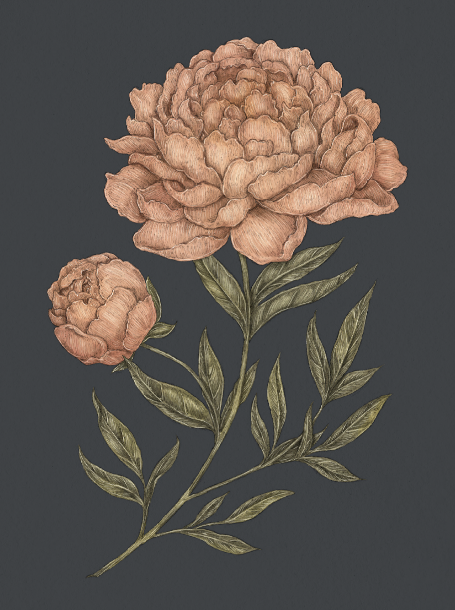

Plate PEONY
The Language of Flowers
Peony Study

Peony
Paeonia
Definition: A flower associated in floriography with bashfulness.
Meaning
Bashfulness
Origin
In ancient Greece, it was said that nymphs could turn themselves into peony flowers to avoid being
seen by humans. Bashful creatures by nature, they wished to hide from mortal eyes. Likewise, even in
full bloom, peonies' petals curl inward, protecting their delicate centers.
Pair With
- Hyacinth and Violet to apologize and ask for forgiveness
- Foxglove as a gift for a secret admirer